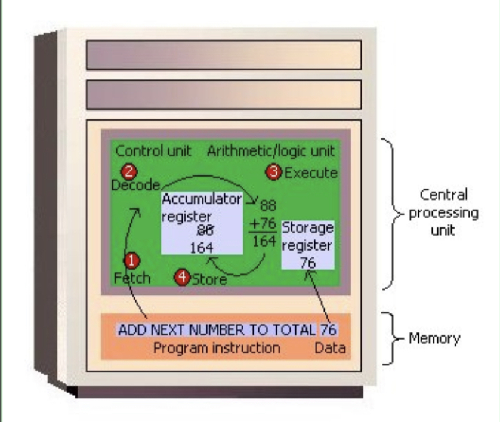

Project Group 3: Fung Kwok Wai, Tsang Ka Long, Ng Hung Wai, Chan Chun Wa
Examples of CPU Architectures and Instruction Processing
The CPU executes program instructions in a machine cycle, as demonstrated in the lecture. The CPU has four functions:
Each central processor unit has an internal clock that generates pulses at a consistent rate to keep all computer activity in sync. A single machine-cycle instruction can be made up of many sub-instructions, each of which must take at least one clock cycle. Every type of central processing unit is designed to understand a certain set of instructions known as the instruction set. Each type of CPU understands a different instruction set, just as people understand different languages. As a result, one CPU—for example, one for a Compaq personal computer—can perform many functions.
Since some CPUs may execute instructions that perform several operations in a single instruction. The ADD command, for example, can add two integers and store the result in a single operation.
Because fewer instructions are required to complete a job, building and running programs on x86 processors is a breeze. CISC processing has the drawback of resulting in longer instruction execution times and higher power consumption. This is because the CPU must perform more complex procedures in a single instruction, which might take longer to complete and require more resources.
Overall, x86 architecture and CISC processing show how a CPU may strike a compromise between instruction processing simplicity and efficiency by allowing a single instruction to perform many functions at the price of increasing complexity and resource use.
The following code snippet demonstrates x86 architecture and CISC processing in action:
MOV EAX, 5
ADD EAX, 10
The first instruction MOV EAX, 5 in this example inserts the value 5 into the EAX register. The second instruction, ADD EAX, 10, adds 10 to the value stored in the EAX register and returns the result to the EAX register.
As you can see, the ADD instruction performs two actions in a single instruction: adding and storing the result. This is an illustration of CISC processing in operation.
CISC processing allows this code to be written in fewer instructions, making programming and executing code on x86 Processors comparatively simple. Nevertheless, because the CPU must conduct more complicated calculations in a single instruction, it might result in longer instruction execution times and higher power consumption.